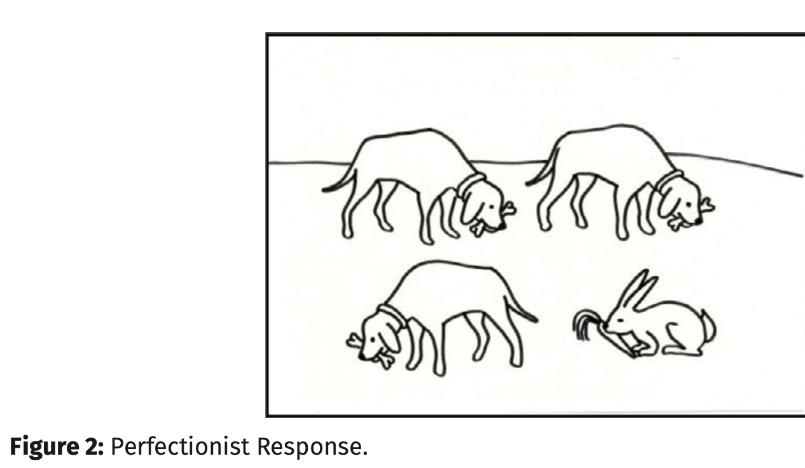
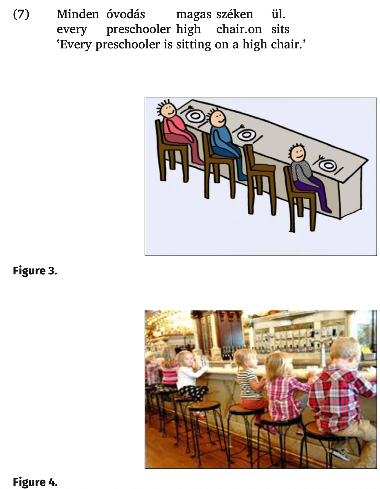
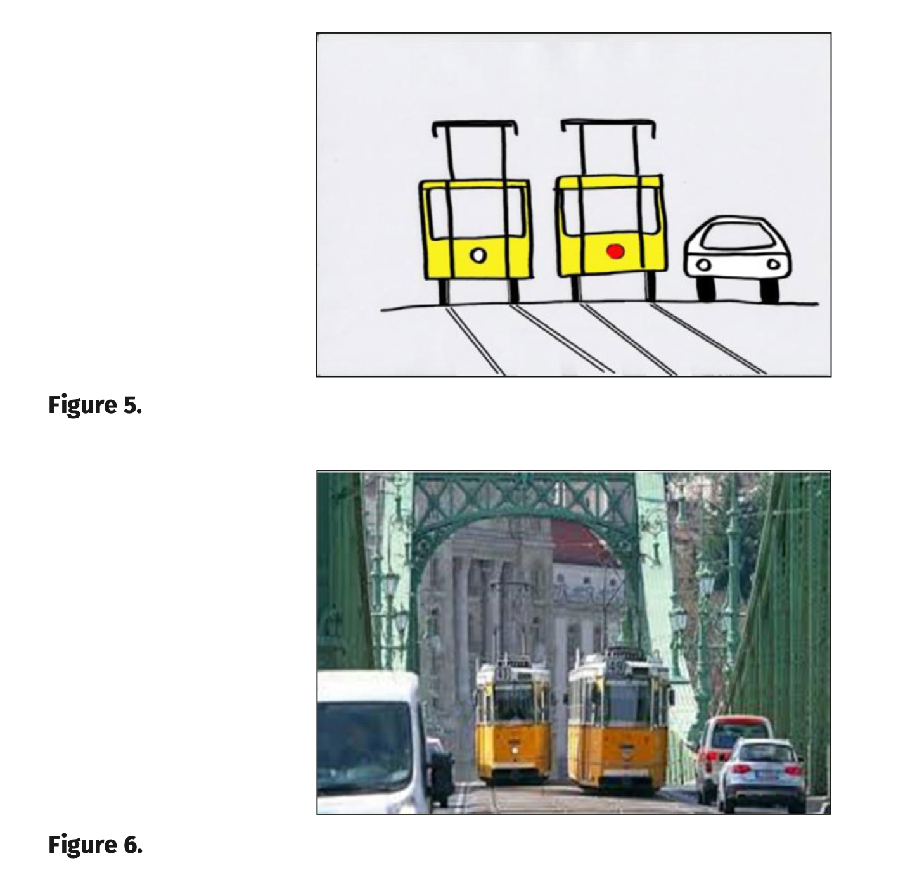
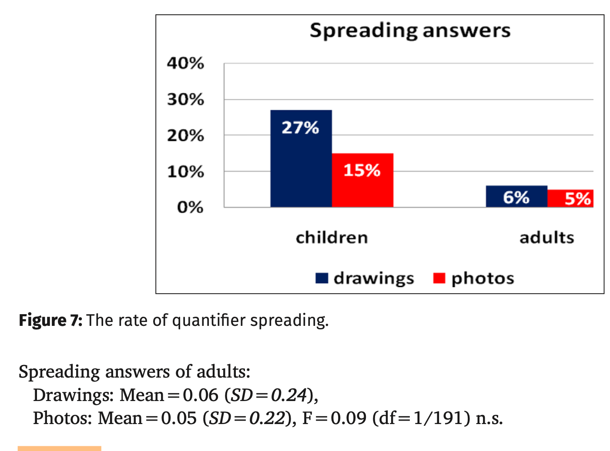
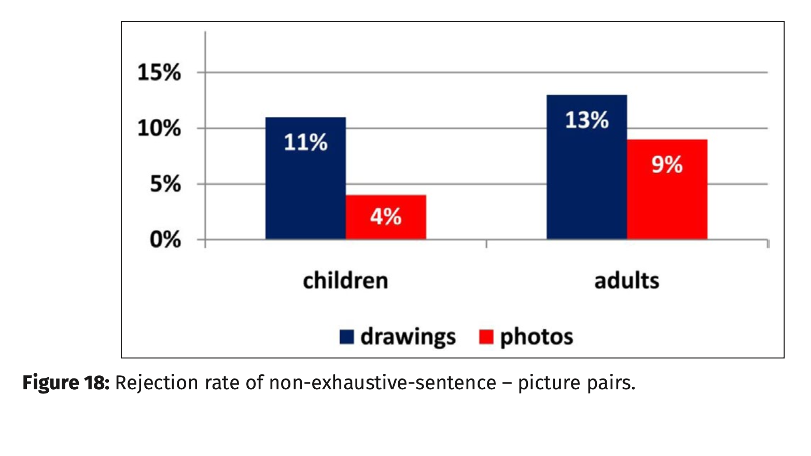

Quantifier Spreading Children Misled by Ostensive Cues
-
Katalin É. Kiss and Tamás Zétényi
-
TL;DR : Use real images instead of Drawings
-
economy of the stimulus employed in child language experiments may lend an increased ostensive effect to the message communicated to the child
-
Thus, when the visual stimulus in a sentence-picture matching task is a minimal model abstracting away from the details of the situation, children often regard all the elements of the stimulus as ostensive clues to be represented in the corresponding sentence
-
The use of such minimal stimuli is mistaken when the experiment aims to test whether or not a certain element of the stimulus is relevant for the linguistic representation or interpretation
-
It is claimed that children find a universally quantified sentence like Every girl is riding a bicycle to be a false description of a picture showing three girls riding bicycles and a solo bicycle because they are misled to believe that all the elements in the visual stimulus are relevant, hence all of them are to be represented by the corresponding linguistic description.
-
When the iconic drawings were replaced by photos taken in a natural environment rich in accidental details, the occurrence of quantifier spreading was radically reduced.
-
It is shown that an extra object in the visual stimulus can lead to the rejection of the sentence also in the case of sentences involving no quantification, which gives further support to the claim that the source of the problem is not (or not only) the grammatical or cognitive difficulty of quantification but the unintended ostensive effect of the extra object.
-
The reason for the unexpected reactions is that the experimental stimulus presented to the child is devoid of any episodic details; it merely contains a few iconic symbols, which suggests to the child that the irrelevant details have been omitted; hence every element of the stimulus, including the one whose relevance the experiment aims to test, is to be interpreted as an ostensive signal, i.e., every element of the stimulus is significant.
Quantifier Spreading as an Ostensive Effect
- The phenomenon
- Every girl is riding a bicycle.
- Although every one of the three girls in the picture is riding a bicycle, many children find the sentence false
- When asked “Why?”, they point at the solo bicycle, and say something like “Not that bicycle”, i.e., they show ‘Exhaustive Pairing’ under an extra object condition.
- Quantifier spreading also has a somewhat less common variant, called “Perfectionist Response”.1 It occurs when a universally quantified sentence like (2a) is to be matched with a picture like Figure 2, which contains an element that is neither identical with the referent of the subject, nor identical with the referent of the VP-internal complement.2 (2) a. Every dog is eating a bone. b. No, not that one.
Theories of Quantifier Spreading
- In fact, children are not fully consistent in assigning to universally quantified sentences interpretations of type (3b); the adult interpretation illustrated in (3a),
- too, appears to be accessible also to those favoring the spreading reading.
- The event quantification analysis of Philip (1995) has been criticized on several grounds. For example, it predicts that quantifier spreading is only attested in the case of eventive sentences. In fact, as shown by Philip (2011), it also occurs with sentences of type (4), which contain no event variable:
- Furthermore, as Crain et al. (1996) point out, the analysis of every as an event quantifier does not account for the “perfectionist” mistake, i.e., for the case when the sentence questioned in (1a) is found false in the presence of an extra participant that is neither a girl, nor a bicycle
- The fact that children have initially access to two interpretations of universally quantified sentences (those of type (3b) and (3a)), one of which is later eliminated, raises a learnability problem, as well – under the assumption that children acquiring their mother tongue only have access to positive evidence.
- Several experiments on quantifier spreading have shown that the rate of spreading is affected by pragmatic factors, e.g., a rich linguistic or visual context reduces spreading (cf. Crain et al. 1996
- However, some of the evidence concerning the role of extra elements appears to be contradictory; e.g., in the case of quantifier spreading, both the increasing of the number of extra objects (Freeman, Sinha & Stedmon 1982), and the decreasing of the size of the extra object (Philip 2011: 377) have been found to reduce the proportion of spreading, which has not been given a principled explanation.
- Relevance Account
- Salient Object Strategy
- Quantifier spreading is due to the increased ostensive effect of iconic stimuli
- We hypothesized that quantifier spreading is elicited in experimental situations where the stimulus is not embedded in a context, and is devoid of episodic details, as a consequence of which it gains a – potentially misleading – concentrated ostensive effect
- Crucially, however, when the stimulus only contains a few iconic symbols, every one of its elements gains an ostensive effect.
Experiment
Participants
- We tested 82 children from 5 Budapest kindergartens, whose mean age was 5;3 years (SD=0.73).
- We also carried out the experiment with an adult control group consisting of 24 university students, whose mean age was 21 years (SD=1.61).
Procedure
- The child, the experimenter, and a helper were seated at a table in front of a laptop in a quiet room of the kindergarten.
- The helper held a teddy bear
- The experimenter told the child that they would look at pictures on the computer screen together.
- They would listen to what the bear said about each picture, and the experimenter would ask the subject whether or not it was true.
Materials
- 16 sentence–picture pairs (8 fillers and 8 test pairs) were presented to the subjects Each test sentence involved the universal quantifier minden ‛every’
- Four sentence–picture pairs were of the type which can elicit the Exhaustive Pairing mistake, i.e., they involved an extra object (see example (7) and Figures 3, 4), and four sentence–picture pairs were of the type which can elicit the Perfectionist Response, i.e., they contained an extra element neither identical with the referent of the subject, nor identical with the referent of the VPinternal complement (see example (8) and Figures 5, 6)
Results
- The stimuli consisting of a quantified sentence and a drawing elicited quantifier spreading in 27% of the children’s answers. In the case of the stimuli consisting of a quantified sentence and a photo, the rate of quantifier spreading dropped to 15%. Among the adults, the rate of quantifier spreading was 6% and 5%, respectively
Discussion
- In language acquisition experiments, experimenters tend to use iconic visual stimuli
- in order to eliminate irrelevant distractors, and to ensure that children only react to the controlled factor(s)
- Our results suggest that this method is mistaken when the experiment aims to test whether or not an element in the stimulus is relevant for the linguistic representation
- If the visual stimulus is a minimal model devoid of episodic details, children tend to interpret all of its elements as ostensive clues to be represented linguistically
- If the ostensive effect is diminished by the use of photos taken in natural environments, the proportion of QS is reduced by nearly 50%.
- The only photo which elicited a relatively high proportion (36%) of quantifier spreading answers (Figure 8) is a picture of a fairly artificial-looking setup with remarkably few details:
- Decreasing the size of the extra object makes the object less salient; but increasing the number of the extra objects does not necessarily decrease their salience, and what is more, it is not clear why an increase in the salience of the extra object should result in the increased frequency of quantifier spreading responses.
- Misleading ostensive effect in other types of acquisition experiments An example: A test of exhaustivity
- t has been tested in several experiments (e.g., Beaver & Onea 2011; Kas & Lukács 2013; Pintér 2016) whether the exhaustivity of the preverbal focus of the Hungarian sentence (corresponding roughly to an English cleft constituent) is an inherent semantic property or a cancellable pragmatic implicature
- The tasks involved truth value judgements; experimenters aimed to find out whether children and adults accept a focus construction like (11) as a true description of a non-exhaustive situation like that in Figure 11 (both cited from Pintér 2016):
Results
- The rate of rejection of the sentences as true descriptions of the visually represented situations significantly correlated with the type of the visual representation.
- The sentence– drawing pairs were rejected in 10.53% of the cases.
- n the case of the sentence–photo pairs, the rate of rejection was a mere 3.51%.
- Just as in Pintér’s (2016) experiment, the rate of rejection (i.e., the rate of the exhaustive interpretation of the sentences) was slightly even higher in the adult control group: 13.33% in the case of sentence–drawing pairs, and 8.88% in the case of sentence–photo pairs (see Figure 18). When we asked the subjects giving
- negative answers why e.g. (14) was not true of Figure 14, they consistently gave answers of the following type: “Because the woman is also feeding the ducks”.
- 15 children (39%) gave at least one negative answer
Discussion
- The sentences tested in this experiment involved no special linguistic or cognitive difficulty; they were simple declarative sentences with no quantification, let alone universal quantification; nevertheless, 10.53% of the preschoolers evaluated them as false descriptions of the drawings intended to represent them visually.
- Since this rate is not high (though it is comparable to the 12% of partial rejection obtained by Pintér 2016 in this age group), we might be tempted to attribute it to noise (children’s failure to pay attention, etc.)
- However, if the 10.53% rate of rejection had been due to noise, it would not have dropped to 3.51% when the visual stimuli were represented by photos.
- The comments of the children giving negative answers made it clear that they rejected the given sentence–picture pair because the picture contained extra objects that were not repre-
- sented linguistically
- Crucially, the photos contained many more extra agents and extra objects than the drawings, still they elicited significantly less rejections.
- What made the presence of extra objects in the drawings ostensive was the minimality of the drawings, suggesting that everything irrelevant had been eliminated from them.
Pictures
- 
- 
- 
- 
- 